Shadow Sites
Using lost Syrian historical monuments that once shaped Syria's cities as inspiration, this thesis pursues an ancient aesthetics. An aesthetic inspired by lost historic architecture has become the driving force behind this project. In this project, the aim is to create an environment that will allow residents of the Al-Zaatari refugee camp to recall their rich cultural heritage and bring it back before it is lost forever and deduced into nothing, but a story told by a few.
With ongoing warfare, forced displacement, and damage to infrastructure on an unprecedented scale, the Syrian conflict has accelerated the decline of security and stability in the region. Eight years after Al-Za'atari refugee camp was founded as a temporary solution, the population has grown to 76,892 refugees (as of June, 2019). With there being no indication of returning to their home country, many are now forced to call this place home. Among the changing attributes of the camp, such as its emergence into a more permanent structure, and the influence of its residents in making the necessary changes, this thesis will provide the missing links to motivate the transition.
Geometry has been an artistic tool that has been adapted for centuries and is most evident in the Middle East where it has been engraved into its identity. This thesis explores ways to change the face and pattern of the Al-Za’atari camp by using the geometric guidelines in both freehand and measured drawing techniques. Based on historical geometries, this project aims to create a central point that can serve as a hub for uniting Syrian refugees and serving as a reminder of their historic heritage. A speculative approach will be utilized in this project with the aim of exploring an alternative planning method to create a more vibrant sense of identity in the camp.
Circular forms are archetypal for Islamic art, symbolic of eternity and permanence. The form enables different routes to lead to the central core of each portion of the site. These are strictly adaptations of ancient geometry and designs taken from historical muqarnas. The muqarnas are situated at the intersection between ceiling and walls, it is meant to hang in an icicle-like formation and generate in essence an expression that is the opposite of gravity.
Geometrically, the plan was first laid out, then each level was elevated to the appropriate height, these levels were then connected through a mathematically defined curve extending downward from the central point outwards. Visually the structure appears as a singular form, however the spaces are divided in a way to meet the needs of the community. It is the smell and certain features in each space that lead visitors to that area. To challenge future refugee camp developments because of continued war and displacement of communities, the design embodies both the past and the future of the camp by carrying on traditional values.
 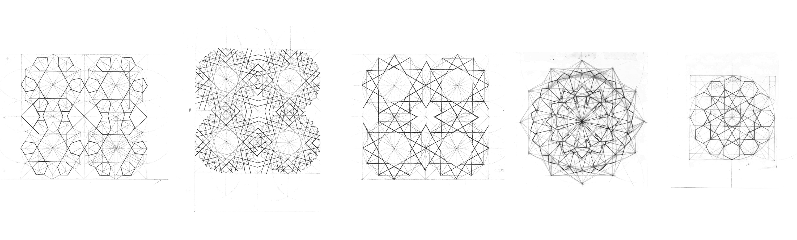
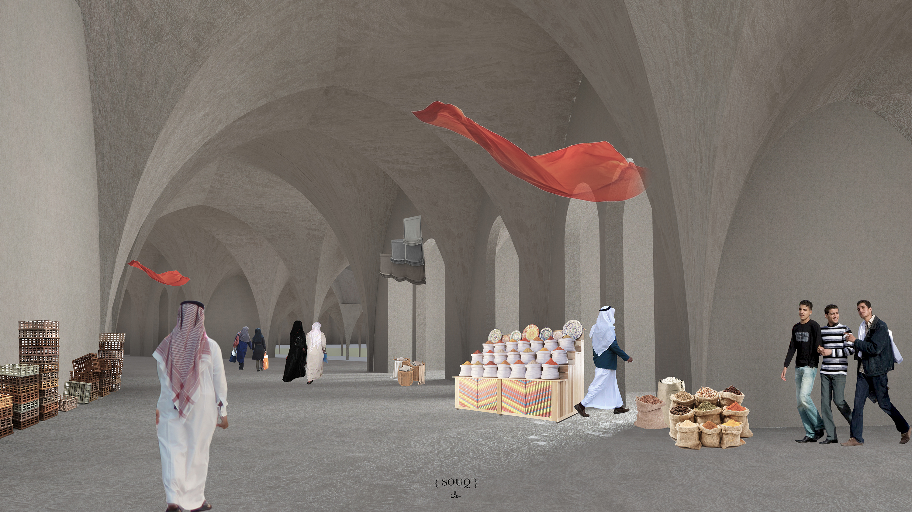
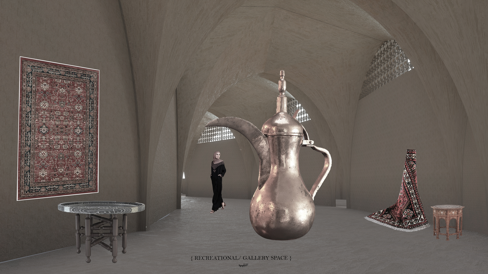
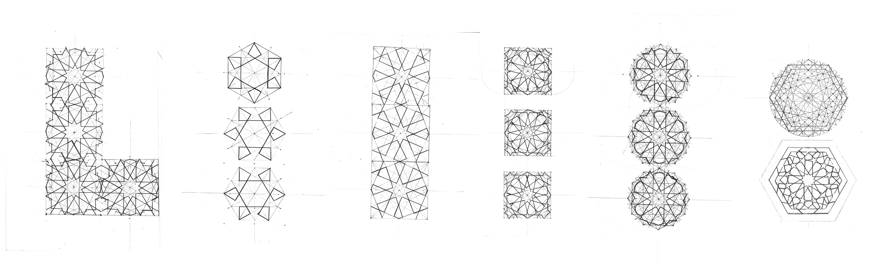
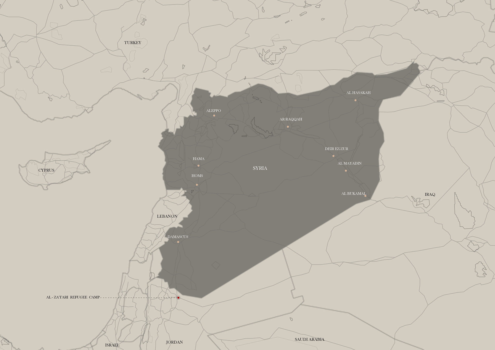
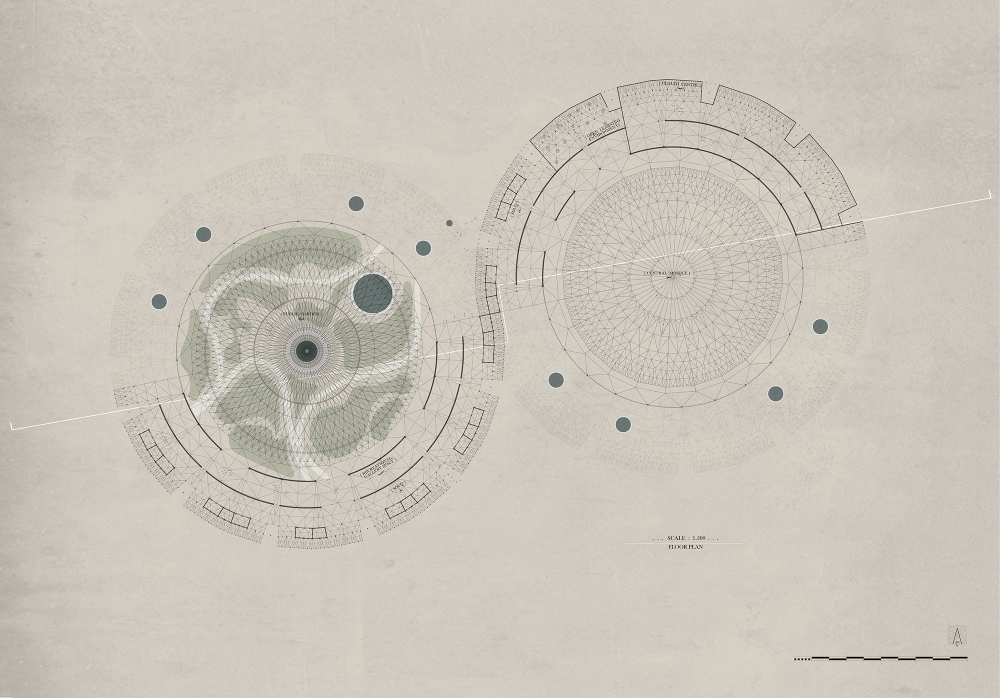
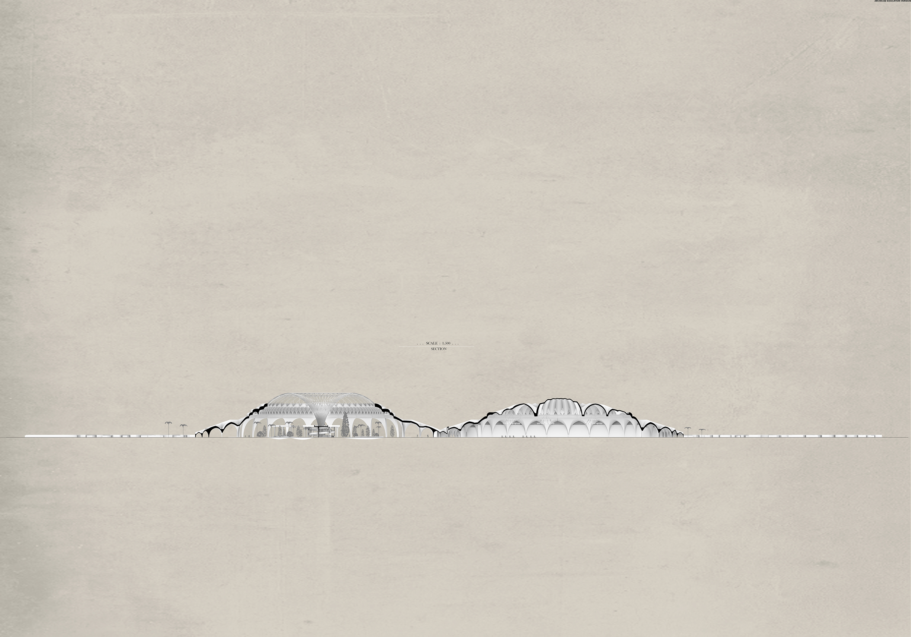
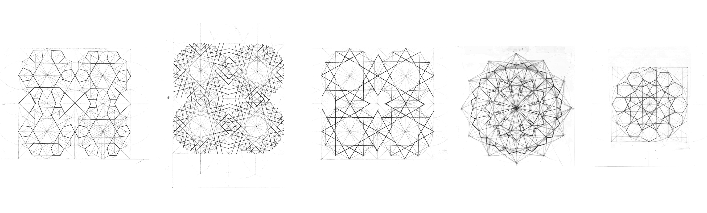
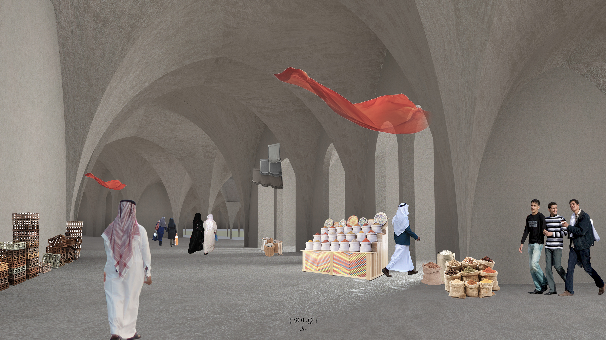
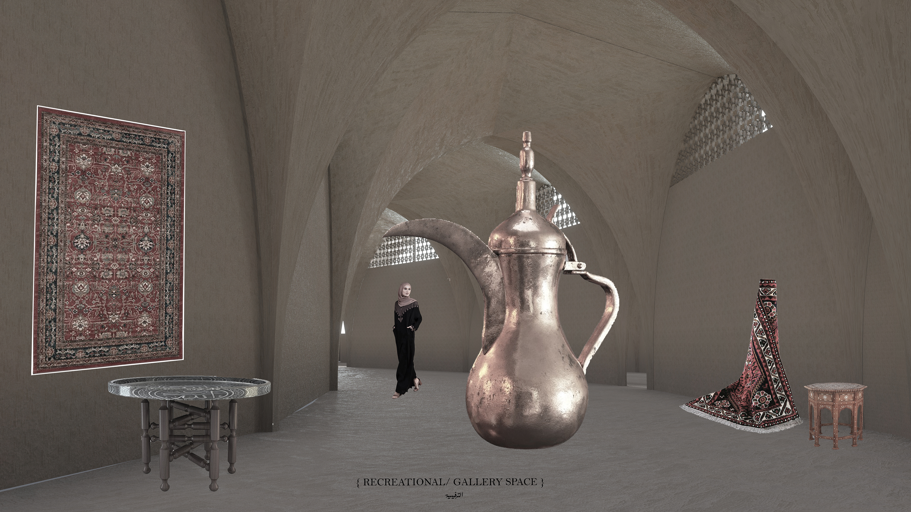
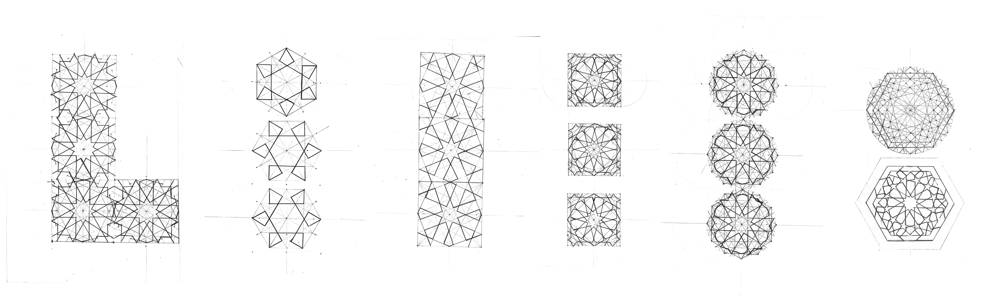
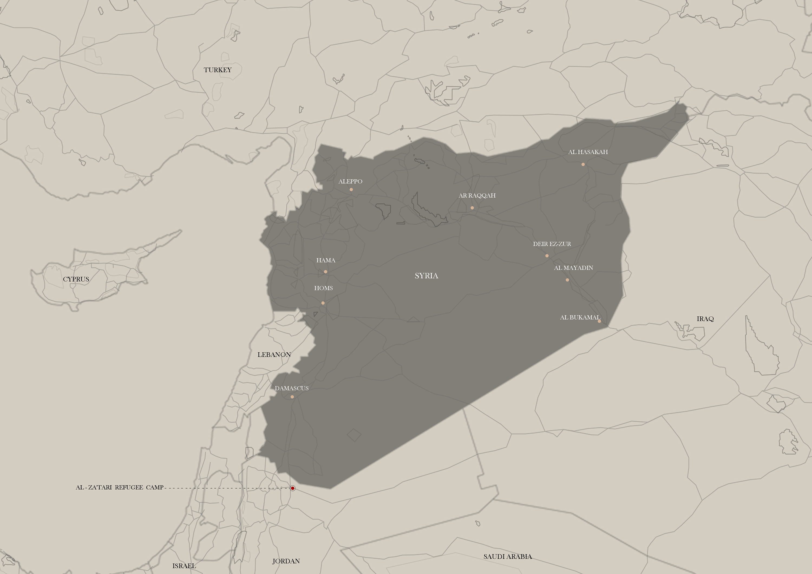
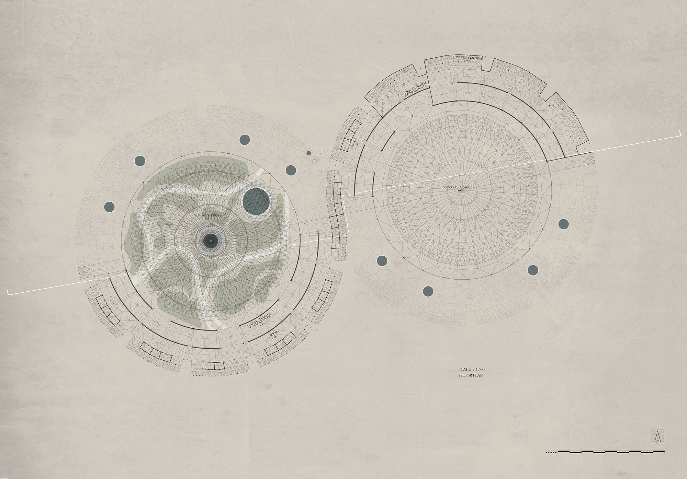
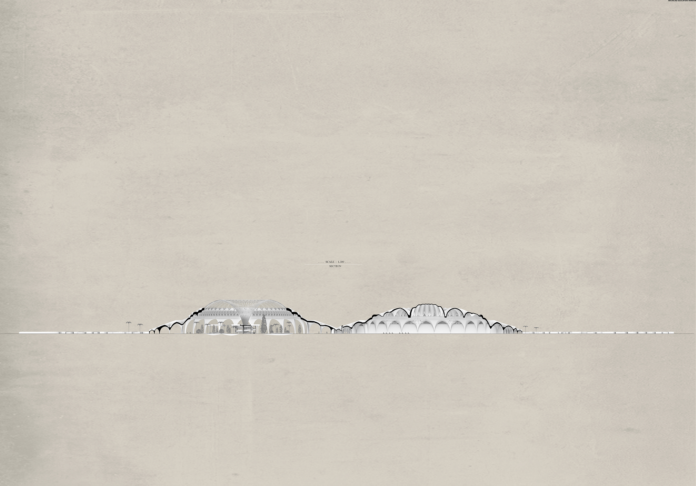